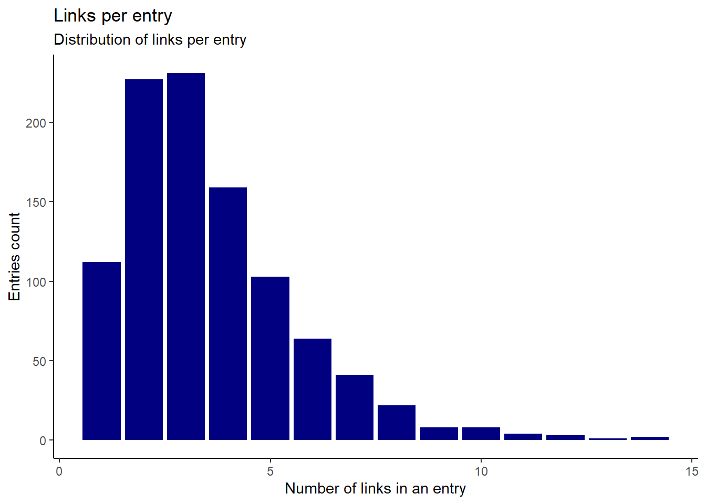
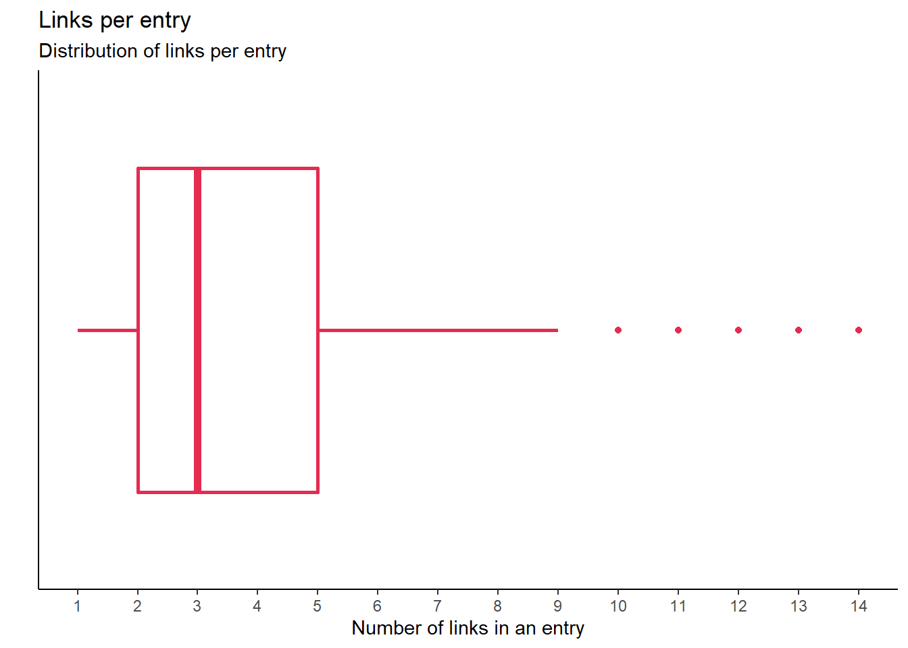
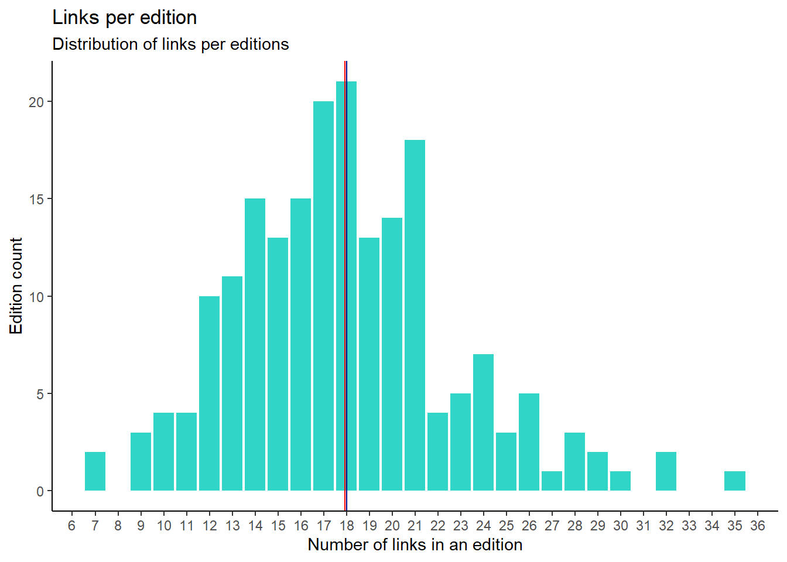
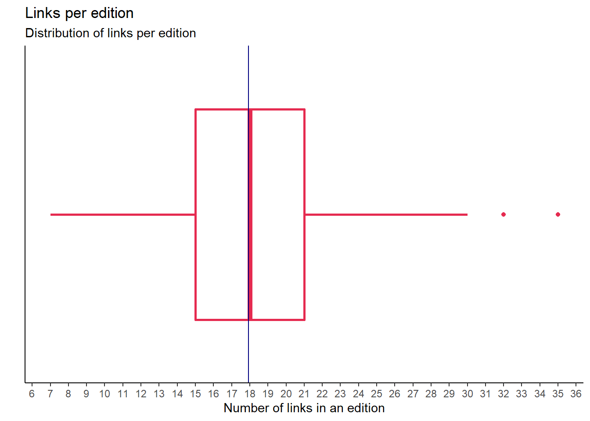

Last updated: 2020-05-23
Checks: 7 0
Knit directory: 034_jsv-data-is-plural/
This reproducible R Markdown analysis was created with workflowr (version 1.6.2). The Checks tab describes the reproducibility checks that were applied when the results were created. The Past versions tab lists the development history.
Great! Since the R Markdown file has been committed to the Git repository, you know the exact version of the code that produced these results.
Great job! The global environment was empty. Objects defined in the global environment can affect the analysis in your R Markdown file in unknown ways. For reproduciblity it’s best to always run the code in an empty environment.
The command set.seed(20200510) was run prior to running the code in the R Markdown file. Setting a seed ensures that any results that rely on randomness, e.g. subsampling or permutations, are reproducible.
Great job! Recording the operating system, R version, and package versions is critical for reproducibility.
Nice! There were no cached chunks for this analysis, so you can be confident that you successfully produced the results during this run.
Great job! Using relative paths to the files within your workflowr project makes it easier to run your code on other machines.
Great! You are using Git for version control. Tracking code development and connecting the code version to the results is critical for reproducibility.
The results in this page were generated with repository version 9e05f1a. See the Past versions tab to see a history of the changes made to the R Markdown and HTML files.
Note that you need to be careful to ensure that all relevant files for the analysis have been committed to Git prior to generating the results (you can use wflow_publish or wflow_git_commit). workflowr only checks the R Markdown file, but you know if there are other scripts or data files that it depends on. Below is the status of the Git repository when the results were generated:
Ignored files:
Ignored: .Rhistory
Ignored: .Rproj.user/
Untracked files:
Untracked: code/fnc_should_upate.R
Untracked: data/dip_cached.rds
Untracked: data/dip_glance_cached.rds
Untracked: data/dip_links.rds
Untracked: data/dip_texts.rds
Unstaged changes:
Modified: README.md
Deleted: analysis/03_exploration_data.Rmd
Note that any generated files, e.g. HTML, png, CSS, etc., are not included in this status report because it is ok for generated content to have uncommitted changes.
These are the previous versions of the repository in which changes were made to the R Markdown (analysis/03_exploration_links_data.Rmd) and HTML (docs/03_exploration_links_data.html) files. If you’ve configured a remote Git repository (see ?wflow_git_remote), click on the hyperlinks in the table below to view the files as they were in that past version.
| File | Version | Author | Date | Message |
|---|---|---|---|---|
| Rmd | 9e05f1a | ogorodriguez | 2020-05-23 | making sure all is updated with recent changes |
Now that we have the two sets of files to analyse either the links or the texts in the list of entries of Data is Plural, we can start playing with the sets to see what type of questions can we get from the data.
I will bring in the sets I have saved as .rds files.
dip_links <- read_rds(here::here("data", "dip_links.rds"))
dip_texts <- read_rds(here::here("data", "dip_texts.rds"))Each entry for a recommended data set comes with the links to where it is located as well as for reference. Those are found in the links column. I wondered about the number of links that can be found in an entry. A histogram can give us an idea of the distribution of links.
dip_links %>%
select(edition, text, links) %>%
count(text, sort = FALSE) %>%
ggplot(aes(n)) +
geom_histogram(stat = "count", , fill = "navy blue") +
theme_classic() +
theme(legend.position = "none") +
labs(title = "Links per entry",
subtitle = "Distribution of links per entry",
x = "Number of links in an entry",
y = "Entries count")
The graphs shows that almost 500 entries have between 2 and 3 links associated. Some entries have even more than 10 links. One entry has 14 links included in them. Interesting that from the 900+ entries, there is always a link ranging from 1 to 14 without any interruption.
Another way to represent this is via a boxplot to see the spread of the number of links in entries. We will see the median values and the corresponding outliers.
dip_links %>%
select(edition, text, links) %>%
count(text, sort = FALSE) %>%
ggplot(aes(n, y = "")) +
geom_boxplot(colour = "#E52B50", size=1) + # #E52B50 = Amaranth color
theme_classic() +
theme(legend.position = "none",
axis.ticks.y = element_blank(),
axis.text.y=element_blank()) +
scale_x_continuous(breaks = seq(from = 0, to = 15, by = 1)) +
labs(title = "Links per entry",
subtitle = "Distribution of links per entry",
x = "Number of links in an entry",
y = " ")
We can also collect the number of links per edition (or date)
dip_links %>%
select(edition, text, links) %>%
count(edition, sort = FALSE) %>%
ggplot(aes(n)) +
geom_histogram(stat = "count", fill = "#30D5C8") +
theme_classic() +
theme(legend.position = "none") +
scale_x_continuous(breaks = seq(from = 0, to = 40, by = 1)) +
geom_vline(aes(xintercept = mean(n)),col = 'red',size = 0.5) +
geom_vline(aes(xintercept = median(n)),col = 'navy blue',size = 0.5) +
labs(title = "Links per edition",
subtitle = "Distribution of links per editions",
x = "Number of links in an edition",
y = "Edition count")
Boxplot
dip_links %>%
select(edition, text, links) %>%
count(edition, sort = FALSE) %>%
ggplot(aes(n, y = "")) +
geom_boxplot(colour = "#E52B50", size=1) + # #E52B50 = Amaranth color
theme_classic() +
theme(legend.position = "none",
axis.ticks.y = element_blank(),
axis.text.y=element_blank()) +
scale_x_continuous(breaks = seq(from = 0, to = 40, by = 1)) +
geom_vline(aes(xintercept = mean(n)),col = 'navy blue',size = 0.5) +
labs(title = "Links per edition",
subtitle = "Distribution of links per edition",
x = "Number of links in an edition",
y = " ")
In both graphs above we can see that mean and median values of the total number of links in an edition (newsletter is the same.) Average number of links in a newsletter is 18. And 50% of the number of newsletter have 18 links or less, 50% have 18 or more links. It is a bit normally distributed. There is a little skewness to the left.
Which is the edition with 36 links?
dip_links %>%
select(edition, text, links) %>%
count(edition, sort = TRUE) %>%
top_n(1)
#> # A tibble: 1 x 2
#> edition n
#> <date> <int>
#> 1 2017-05-31 35It is the edition of May 31, 2017. Which entries or datasets it had?
dip_texts %>%
filter(edition == "2017-05-31") %>%
select(position_fct, text, links, hattip_name, hattips) %>%
gt::gt() %>%
gt::cols_width(vars(text, links) ~ px(500))| position_fct | text | links | hattip_name | hattips |
|---|---|---|---|---|
| 1 | Last week at BuzzFeed News, we shared a vast trove federal payroll data. Those records — provided by Office of Personnel Management through the Freedom of Information Act — cover more than 40 years and millions of employees. The dataset includes salaries, titles, job types, and demographic variables. In many-but-not-all cases (per OPM’s data release policies), it also includes names. Previously, federal payroll data had been searchable online, but very little was available in downloadable, analysis-friendly formats. Also: Many states – including New York, California, Florida, New Jersey, Minnesota, Arkansas, South Carolina, and Washington – proactively make payroll data available for download. (Some cities, such as Chicago, do, too.) | https://www.buzzfeed.com/jsvine/sharing-hundreds-of-millions-of-federal-payroll-records http://php.app.com/agent/federalemployees/search https://www.fedsdatacenter.com/federal-pay-rates/ https://data.ny.gov/browse?tags=salaries%2Fpayroll&utf8=%E2%9C%93 http://publicpay.ca.gov/ http://salaries.myflorida.com/ http://www.yourmoney.nj.gov/transparency/payroll/ https://mn.gov/mmb/transparency-mn/payrolldata.jsp https://www.ark.org/dfa/transparency/employee_compensation.php http://www.admin.sc.gov/accountability-portal/state-salaries http://fiscal.wa.gov/salaries.aspx http://fiscal.wa.gov/salaries.aspx https://data.cityofchicago.org/Administration-Finance/Current-Employee-Names-Salaries-and-Position-Title/xzkq-xp2w | NA | NA |
| 2 | U.S. lobbyists must notify Congress within 45 days of being retained by new clients. Every quarter after that, they’re required to file activity reports that detail the agencies they lobbied, the topics they covered, and the income they earned. Bulk downloads of both types of reports are available as XML files from the House (going back to 2004) and from the Senate (since 1999). Although they receive the same filings, each chamber “follows different data-cleaning, processing, and editing procedures before storing the data,” according to this recent GAO report. | http://disclosures.house.gov/ld/ldsearch.aspx https://www.senate.gov/legislative/Public_Disclosure/LDA_reports.htm http://www.gao.gov/products/GAO-16-320 | NA | NA |
| 3 | A team of researchers at the Boston University School of Public Health has collected data on the presence/absence of 133 different types of firearm laws in each U.S. state, for each year between 1991 and 2016. The legal provisions are grouped into 14 categories, such as background checks, “Stand Your Ground” laws, and child access prevention. You can download a spreadsheet of the data, and also browse state-by-state summaries. Previously: The Correlates of State Policy Project (DIP 2016.07.06). | https://www.statefirearmlaws.org/about.html https://www.statefirearmlaws.org/ https://www.statefirearmlaws.org/categories.html https://www.statefirearmlaws.org/table.html https://www.statefirearmlaws.org/state-by-state.html https://tinyletter.com/data-is-plural/letters/data-is-plural-2016-07-06-edition | NA | NA |
| 4 | Aswath Damodaran — a professor of finance at the NYU’s business school — maintains a trove of data on per-sector financials, including effective tax rates, return on equity, and working capital ratios by industry. For most datasets, Damodaran publishes both current and historical versions. | http://pages.stern.nyu.edu/~adamodar/New_Home_Page/ http://pages.stern.nyu.edu/~adamodar/New_Home_Page/data.html http://pages.stern.nyu.edu/~adamodar/New_Home_Page/datafile/taxrate.htm http://pages.stern.nyu.edu/~adamodar/New_Home_Page/datafile/roe.html http://pages.stern.nyu.edu/~adamodar/New_Home_Page/datafile/wcdata.html http://pages.stern.nyu.edu/~adamodar/New_Home_Page/datacurrent.html http://pages.stern.nyu.edu/~adamodar/New_Home_Page/dataarchived.html | Tim McGovern | https://twitter.com/herdingbats |
| 5 | You might have seen New York City’s bubble map of dog names. It turns out that the underlying dataset — which includes the name, gender, age as of 2015, breed, and borough of more than 110,000 dogs — is available on GitHub. You can also download slightly older, but more detailed data from WNYC’s Dogs of NYC project. That data includes each dog’s coat colors, whether it had been spayed/neutered, and its ZIP code. Related: Similar pet license data from Tacoma, Wash., and Edmonton, Canada. | http://a816-dohbesp.nyc.gov/IndicatorPublic/dognames/ https://github.com/Kaz-A/dog_names/ https://fusiontables.google.com/data?docid=1pKcxc8kzJbBVzLu_kgzoAMzqYhZyUhtScXjB0BQ#rows:id=1 https://project.wnyc.org/dogs-of-nyc/ https://data.cityoftacoma.org/Neighborhoods/Current-Pet-License-City-of-Tacoma-Fircrest/qnnn-t9wt https://data.edmonton.ca/Community-Services/Pet-Licenses-by-Neighbourhood/5squ-mg4w | Alex P. Miller + Dan Nguyen | https://twitter.com/alexpmil/status/861703366203801600 http://danwin.com/ |
sessionInfo()
#> R version 3.6.1 (2019-07-05)
#> Platform: x86_64-w64-mingw32/x64 (64-bit)
#> Running under: Windows 10 x64 (build 18362)
#>
#> Matrix products: default
#>
#> locale:
#> [1] LC_COLLATE=Spanish_Spain.1252 LC_CTYPE=Spanish_Spain.1252
#> [3] LC_MONETARY=Spanish_Spain.1252 LC_NUMERIC=C
#> [5] LC_TIME=Spanish_Spain.1252
#>
#> attached base packages:
#> [1] stats graphics grDevices utils datasets methods base
#>
#> other attached packages:
#> [1] forcats_0.5.0 stringr_1.4.0 dplyr_0.8.5 purrr_0.3.3
#> [5] readr_1.3.1 tidyr_1.0.2 tibble_3.0.0 tidyverse_1.3.0
#> [9] ggplot2_3.3.0
#>
#> loaded via a namespace (and not attached):
#> [1] Rcpp_1.0.4.6 lubridate_1.7.8 here_0.1 lattice_0.20-40
#> [5] assertthat_0.2.1 rprojroot_1.3-2 digest_0.6.25 utf8_1.1.4
#> [9] R6_2.4.1 cellranger_1.1.0 backports_1.1.6 reprex_0.3.0
#> [13] evaluate_0.14 httr_1.4.1 pillar_1.4.3 rlang_0.4.6
#> [17] readxl_1.3.1 rstudioapi_0.11 whisker_0.4 checkmate_2.0.0
#> [21] rmarkdown_2.1 labeling_0.3 munsell_0.5.0 broom_0.5.5
#> [25] compiler_3.6.1 httpuv_1.5.2 modelr_0.1.6 xfun_0.12
#> [29] pkgconfig_2.0.3 htmltools_0.4.0 tidyselect_1.0.0 workflowr_1.6.2
#> [33] fansi_0.4.0 crayon_1.3.4 dbplyr_1.4.2 withr_2.2.0
#> [37] later_1.0.0 grid_3.6.1 nlme_3.1-144 jsonlite_1.6.1
#> [41] gtable_0.3.0 lifecycle_0.2.0 DBI_1.1.0 git2r_0.26.1
#> [45] magrittr_1.5 scales_1.1.0 cli_2.0.2 stringi_1.4.6
#> [49] farver_2.0.3 fs_1.4.1 promises_1.1.0 xml2_1.3.1
#> [53] ellipsis_0.3.0 generics_0.0.2 vctrs_0.2.4 tools_3.6.1
#> [57] glue_1.4.0 hms_0.5.3 yaml_2.2.1 colorspace_1.4-1
#> [61] gt_0.2.0.5 rvest_0.3.5 knitr_1.28 haven_2.2.0
#> [65] sass_0.2.0